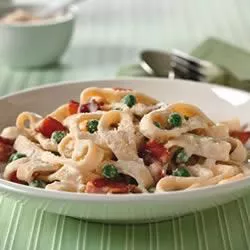

Quick Pasta Carbonara

Ingredients
- ½ pound medium-size pasta
- 4 slices bacon, chopped
- 4 ounces Cream Cheese, cubed
- 1 cup frozen peas
- ¾ cup milk
- ½ cup Grated Parmesan Cheese
- ½ teaspoon garlic powder
Directions
- Cook pasta as directed on the package. Drain pasta and set aside.
- Meanwhile, cook bacon in a large skillet until crisp. Drain bacon on paper towels.
Reserve 2 tablespoons drippings in the skillet.
- Add cream cheese, peas, milk, Parmesan cheese, and garlic powder to reserved drippings.
Cook on low heat until cream cheese is melted and mixture is heated through.
- Place pasta in a large bowl. Add cream cheese sauce and bacon; mix lightly.
Go back
This tasty recipe come from here